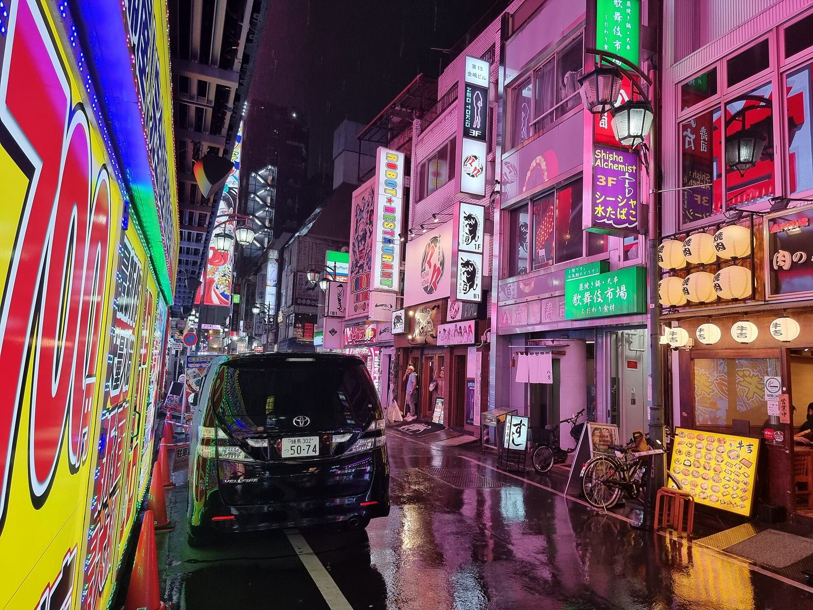

References / Photograph / 484
Kabukichō in a rainstorm at night
A narrow street in Tokyo’s Kabukichō entertainment district during heavy rain: stacked vertical signs in pink, green, and white, and their reflections on the wet asphalt.
- Source
- Wikimedia Commons: Kabukicho during rainstorm at night.jpg
- Creator
- Benlisquare
- Made
- 7 August 2024
- Style
- Cyberpunk (agent-proposed, not yet reviewed by a person)
- Moods
- Nocturnal, gritty, dense
- Evidence
- Downloaded and inspected the Commons 1920 px rendition of the 4000 × 3000 px original. The file description reads “Kabukichō at night, during a heavy rainstorm.”
- Reviewed
- Rights
- Open license, stored. License: CC-BY-SA-4.0. Rights policy

Context
Wikipedia’s Cyberpunk article quotes William Gibson: “Modern Japan simply was cyberpunk.” He describes Shibuya’s “towering, animated crawl of commercial information” and a journalist saying “It is Blade Runner”. See Blade Runner and Akira.
Kabukichō is an entertainment and red-light district in Shinjuku, Tokyo. The photograph is in the Commons category “Kabukichō Sakura Street at night”. Commons.
Observed
- The left side is a wall of yellow, red, and blue illuminated panels edged with green and blue LED strips.
- The buildings on the right are washed in pink light. Vertical signs read “ROBOT★RESTAURANT”, “NEO TOKIO”, and “Shisha Alchemist 3F” with Japanese text, and floor numbers such as “1F” and “B1”.
- The asphalt is wet and reflects pink and yellow light in long streaks. Rain is visible against the black sky.
- A black van stands in the center. Paper lanterns and a backlit menu board are at lower right.
- The sky and the upper buildings are near-black. Almost all light comes from the signs.
Why it belongs
The photograph shows where the style’s palette comes from: no daylight, all light emitted by signs, and a wet ground that doubles it.
The colors here are warmer and more varied (pink, yellow, green) than the cyan-and-magenta palette of designed cyberpunk graphics. Designers reduce this to two or three hues.
Borrow
Light a dark composition only from its signs and labels, and add a soft reflection below a bright element.
Stack short labels vertically, with floor or level codes such as “3F” and “B1”, as data.
Measured
Machine-extracted by tools/image-traits.py on . Full measurement.
- Mean chroma
- 0.22
- Palette
- #1b131f 12%
- #ae6996 5%
- #945c75 5%
- #7b4562 5%
- #281f2e 4%
- #c880aa 4%
- #63374b 4%
- #3e1e28 4%

